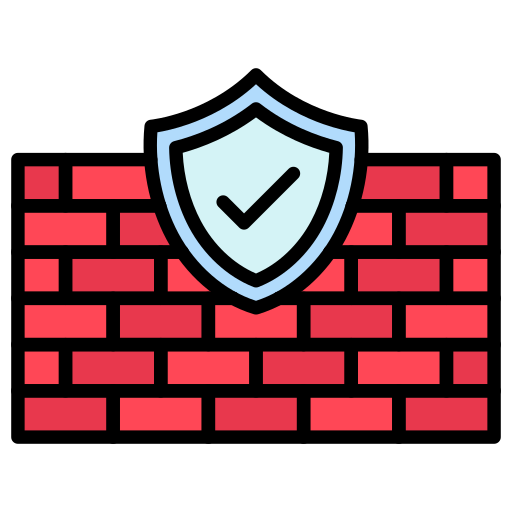

Projet de supervision
Contexte
Mise en place d'une supervision distribuée dans le cadre de mon alternance.
L'objectif final sera de superviser différents sites de manière centralisée en passant par des collecteurs.
Les collecteurs supervisent leur propre réseau et renvoient les données au serveur central.
Installations et configurations
- Installation d’un serveur Centreon Central (Debian 12)
- Installation de serveurs collecteurs (pollers)
- Installation d’un service SMTP
- Programmation et configurations d'hôtes et de services
- Personnalisation de l'interface
- Création d'utilisateurs et attributions de rôles
- Création de plugins spéciaux aux besoins de l'entreprise
- Mise en place d'un service Grafana
- Mise en place d'une communication via VPN
- Virtualisation de serveurs linux.
- Automatisation de la création des pollers.
- Création et administration de règles de ports (DrayTek)
Compétences travaillées
- Administration de systèmes
- Supervision et métrologie
- Gestion de bases de données
- Administration réseau
- Sécurité
- Organisation, documentation et communication
- Scripts et automatisation
Services utilisés

